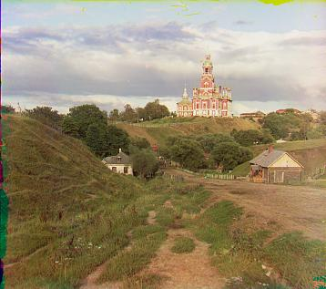

The goal of this project was to take in the Prokudin-Gorskii glass plate images, which come in triplets, one for each channel of color. We use these images to reproduce the original colored scene that was taken. This is done by checking how much each channel was displaced from the blue channel, applying this displacement and stacking the three channels together to produce a colored image. We then do some postprocessing to remove some unwanted portions of the picture (such as the edges), automatically contrast the colors. We also implement a metric which compares channels by gradients rather than just pixel data.
First, we implement a naive way of aligning the channels by iterating over possible displacement values, from [-15, 15] both horizontally and vertically,
and picking the displacement that corresponds to the optimal metric.
The actual displacement is done via. numpy.roll. Our method also crops out the outer 8% of the image, which generally corresponds to the edges, as these would interfere
with the alignment metric. The reconstructed image at this point has not been cropped in any way.
This naive implementation works for small images, but struggles if we try to directly scale it up. Instead, we use an image pyramid. Our implementation first produces
smaller versions of the image, down to a certain size (around 100 pixels in one dimension). Starting from the lowest image, we run our more "naive" alignment function,
initially from [-15, 15] like before. Once we find the displacement, let us call this (dx, dy), we go to the next size, and search for the displacement from
[dx * 2 - 2, dx * 2 + 2], and we do the same with dy. We continue this until we reach the original sized image, and return the pixel value that best aligns the images.
By doing this, we get a runtime of around 25 seconds per larger image.
The first metric we implemented is the L2-distance between images. This is done by summing the squared difference between each pixel between to images. This method works for most images, but does eventually face issues with the emir.tif image. We also implement a normalized-cross-correlation metric, which we do by flattening the images and normalizing them, and then dot producting the two resulting vectors together. We found that this also struggles with the emir.tif file. This leads to us implementing the gradient-based metric. We use numpy.gradient to compute the gradient matrix in both dimensions (i.e. it returns 2 matrices, corresponding to each dimension). Given the gradients for both image 1 and 2, we take the L2-distance between the gradient pairs, and sum them together. We found that this was able to properly align the emir.tif file.
In order to do automatic cropping, we first use scikit-images canny edge filter to produce the binary edge map. We then take the sum along each axis to get the approximate length of the lines. We then use argpartition to find the top 3% of the lines. From this, we gather the closest indices to the 10% away from the edge along each dimensions, and crop based on these indices.
To do this, we first find the smallest and largest pixel values in the image. At this point, we are working with the normalized pixel values, so they lie from [0, 1]. Our goal is to normalize it such that the smallest value equals 0 and the largest equals 1. From this, we get that a = 1 / (brightest - dimmest) and b = dimmest / (dimmest - brightest) such that dimmest * a + b = 0, and brightest * a + b = 1. From there, we scale all the pixel values in the image. However, it is rather difficult to tell the difference between the pictures with only linear contrasting, and perhaps some other form of contrasting would fair better.
Here are the resulting images produced from the whole process as described before.
